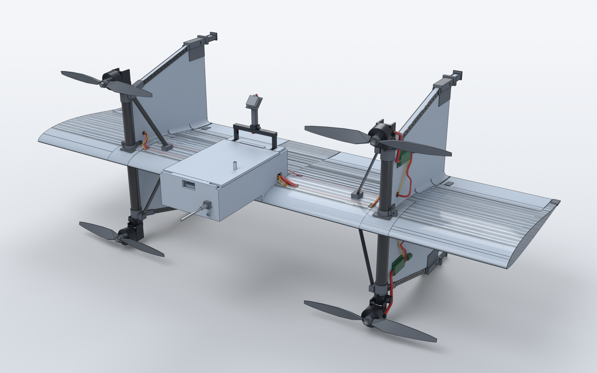
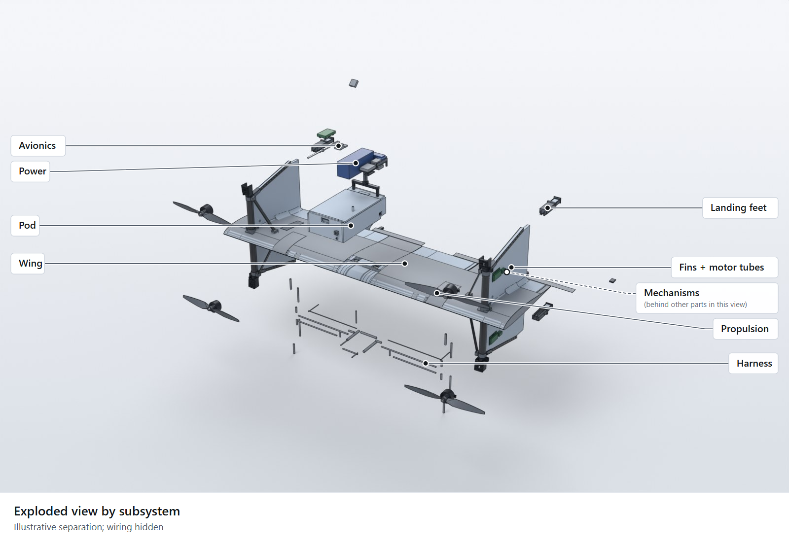
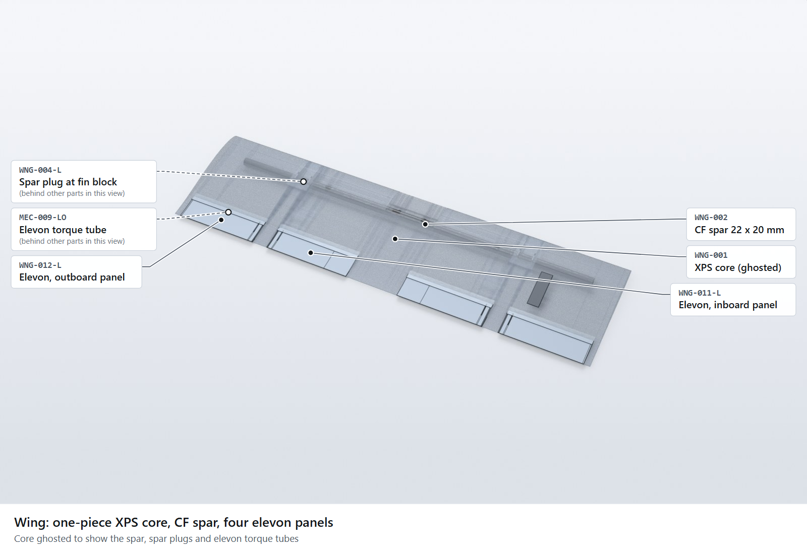
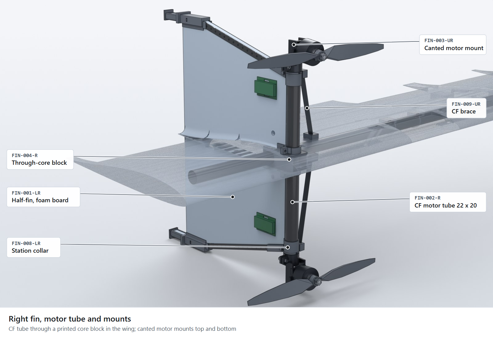
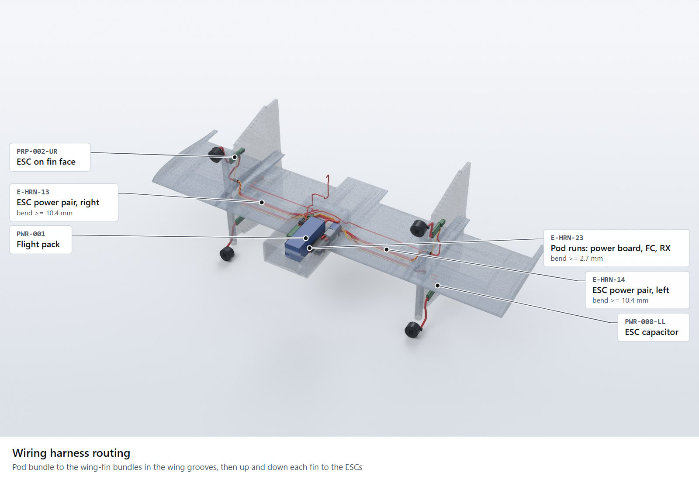
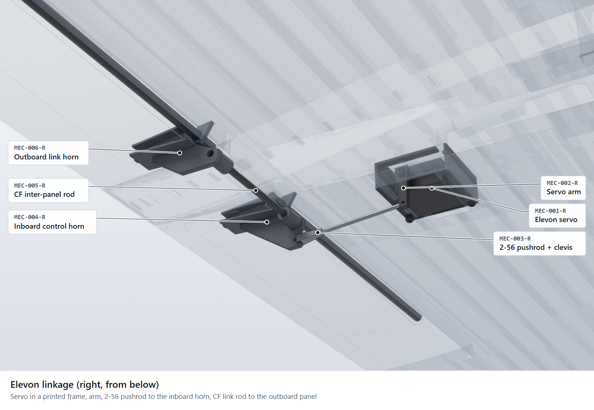
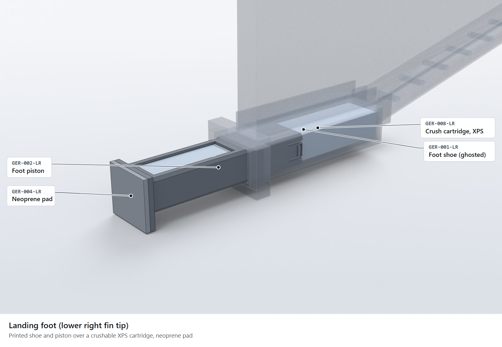
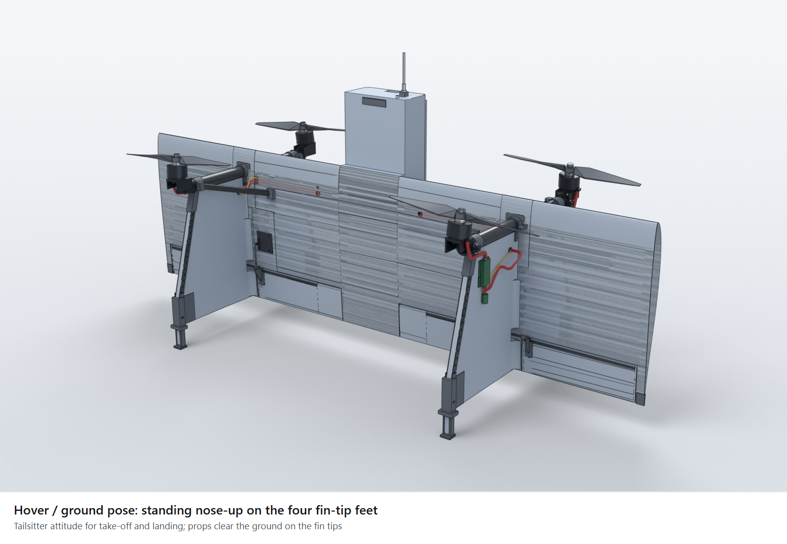

A short, ordered guide to building the K09-L quad tailsitter at Jacobs Hall. Each stage points to the detailed subsystems/<x>/BUILD.md, which holds the dimensions, cut tables and checks. This guide gives the order, the time, the parts and the warnings from the buildability review.
Status: design PROPOSED, frame A1-R6 + CDR fix round (2026-11-13; this guide's order follows showcase/animation/assembly_plan.py, which the assembly check passes with 0 swept-path violations). Nothing has been built yet. The CDR build hold stands: no flight half-fins cut and no flight collars, shoes or mounts printed until CDR-01, -02, -03 and -13 close (review/CDR-2026-11-13/CDR-SUMMARY.md). Open Blockers are not solved. Where a step depends on one, it says "pending fix". Do not print or cut those parts until the fix lands in CAD.

K09-L in cruise attitude
Build animation: the whole build, stages 2–11 (about 2 min). Each stage below links its own clip and shows its end state. The film follows this guide step by step: each part comes in the way a person fits it (along its bore, pin or screw axis, down onto its face, bench sub-assemblies moved on as one piece, tape laid in strips, wires laid along their route), on a path that is swept against every part already placed in the same CAD that passes the collision check (collision/). Check report: ASSEMBLY-CHECK.md, including the places where the CAD forces a different order than written below and the parts no motion can fit yet. Made by showcase/animation/assembly_check.py and render_build.py.
Build and program plans (2026-11-13): G1 process plan · G2 composites and foam · G3 print list · G4 build-step sheets (who, where, tools, hold points for each stage below) · I2 schedule · H2 flight-test plan · H3 flight card, compliance, battery procedure · F5 range test.
Finding IDs (BR-xx) are in the review master table. BOM line IDs (B01, W04…) are in team/I1/BOM.csv.
Before you start
Access. Every builder needs a Jacobs Hall Maker Pass. The owner pays it for the team outside the $2 000 budget (2026-11-13), so it is not a BOM line (BR-04 closed). The pass is drop-in access to the makerspaces, not equipment loans (https://jacobsinstitute.berkeley.edu/making-at-jacobs/, checked 2026-11-13). Each builder also needs General Workshop Safety and the laser, 3D-printer, woodshop, drill-press and electronics trainings. ⚠ Confirm the Spring 2027 pass covers all four from 19 Jan (T-I1-BORROW). Fall access ends 18 Dec; spring trainings run only in the first half of term, so take them all in November and December (BR-31).
Tools Jacobs has, covered by the pass (labs-and-equipment page, checked 2026-11-13): Universal laser cutters (use the 48 × 25 in bed for 20 × 30 in board), Prusa printers (PLA free; the page does not say PETG), band saw, drill presses, PCB shear, soldering stations with solder, multimeters, power supplies, heat guns and fume extractors in the Electronics Lab (studio 110), spray booth (for the 3M 77 lamination). These replace the old soldering-kit lines (G07 to G09), so soldering is a lab day, in-lab only. Tools Jacobs does not list: a hot-wire foam cutter and an enclosed printer for ASA. The hot-wire gear (G11, H05) is bought, in the 20 Nov order, and the team finds an enclosed printer early (BR-29, BR-30). The contradiction in the old order plan ("hot-wire foam cutting is a stated Jacobs capability") is withdrawn. Bring or buy: 1 m steel rule, calipers, depth gauge, inclinometer, preset torque screwdriver (0.1–1 N·m), 0.1 g and 1 g scales, Z-bend pliers, pin vise, 1.85 / 2.5 / 3.4 / 8 mm drills (1.85: servo-arm hole for the 2-56 Z-bend), 3 mm and 22 mm ball bits, sharpened 8 mm brass tube, luggage scale, servo tester, prop balancer.
Consumables (BOM R5, 2026-11-13: epoxy C05, 3M 77 G16, filament tape W09, sand bucket G17 and tether G18 are bought; fillers C07/C08, TPU K08, blades, sandpaper, cups, IPA and every "bring or buy" tool are on the owned-or-borrowed list X14, walked by the team on 19 Nov; gloves, 100 mm tape and a few tools have no price yet, lines U01–U08): laminating epoxy by the quart, colloidal silica, glass and phenolic microballoons, mixing cups, gloves, IPA, 3M 77, 48 mm and 100 mm clear tape, 12 mm filament tape, Blenderm or filament hinge tape, straws, heat-shrink, PETG in four colours, ASA, TPU 95A.
Safety.
- LiPo: charge, store and re-terminate packs in a LiPo bag next to a sand bucket; never solder a pack above 3.8 V per cell; one lead bare at a time. Props off for every powered bench test.
- Hot wire: XPS fumes; cut with extraction or outdoors, never leave the wire powered unattended, keep the supply current at the lowest setting that cuts cleanly.
- Epoxy and CA: nitrile gloves, ventilation; no CA or solvent glue on XPS (it melts the foam). Sanding cured epoxy and carbon makes fine dust: mask and vacuum.
- Motors: after any crash, approach from behind the pod and pull the plug before touching props or fins.
Stop items before stage 1 (from the review):
- ✓ CG back in range in the design (BR-00): lighter feet, landing allocation 60 g, pack datum 4 mm forward (D-75…D-78; predicted CG 50.2 mm in 46.6–51.4). Still modelled only: weigh the first feet and pack.
- ✓ Fin tip and foot shoe on one datum (BR-01, D-75): no overlap in CAD.
- ✓ Motor-mount slit open (BR-02, D-80); clocking dog and notch added (MM-02, D-81). ⚠ The dog's shear strength is not sized yet (C6, before the 18 Dec freeze): print one mount and one collar as test articles first.
- ✓ Strap eyes no longer stop the block going into its pocket (SW-01, BR-17, D-89c): they are four separate PETG eyes
FIN-013, bonded round the bosses in stage 6. - ✓ Shop files exist (BR-03):
python -B redesign/manufacturing/make_shop_files.py (STLs, DXFs, hot-wire templates, jigs). Re-run after any CAD change. - ✓ No two parts overlap in CAD (
python -I redesign/collision/collide.py, static and both elevon limits). Re-run before printing anything that changed.
Stage 1. Buy, measure, print and cut parts
Time: November–18 Dec, plus the winter break for home printing and electrical pre-work.
Parts: B01, B02, A01, M01, P01, W03/W04, W05, W08, D01–D03, C03; strap eyes FIN-013 and horn backplates MEC-013 print with the PETG set (G3 print list).
Detail: every subsystems/*/BUILD.md step 1.
- Buy one motor, one ESC 4-pack, one CoreWing V2, the two flight servos and both packs now (20 Nov order, ORDER-PLAN R5; the third servo is gated X02, the 4 spare ESCs are
B08 after T-F2-DSHOT). Weigh and caliper them. Write the numbers into the params files. - Measure the motor bolt pattern. It must fit y ≤ 17.5 mm. ⚠ Never drill through the motor; use a printed drill guide (MM-04).
- Map the CoreWing boards (S1–S12, Vx, current sense, battery pads) before the pod deck is frozen (WB-01). Flash Plane 4.7 and Bluejay.
- Laser-cut the S5010 templates, radius templates and ply jigs: block clocking jig, build stand, 45° and pin drill guides (SW-06, MF-06).
- Print test-fit parts first, then the flight set. Make two of every crash part: 8 mounts, 8 collars, 3 blocks, spare horns, servo frames and pod handle.
- Build one fin-station test article (300 mm wing stub, block, tube, one half-fin, one foot) and break it. It is also your rehearsal for stages 2–5.
☐ Inspect before moving on: every measured value logged; one mount, one collar and one frame test-fitted; design freeze signed off on 18 Dec.

Exploded view by subsystem
Stage 2. Wing core and spar
Stage 2 clip · assets/animation/build/stage-02.mp4 · same CAD as the collision check
Time: about 2 days hands-on plus 2 × 24 h cures (practice cores extra).
Parts: W01 XPS, W03/W04 spar tube, PETG plugs (W05), C05 epoxy, blocks FIN-004.
Detail: subsystems/wing/BUILD.md steps 1–8, subsystems/fins/BUILD.md step 7.
- Hot-wire two cores from the S5010 templates in one 1.15 m pass each; keep both foam beds. Sand the LE until no ridge can be felt. ⚠ Stall margin is +0.05 %; accept a core only by template gauge at three stations and log the real TE thickness (MF-05, SW-16).
- With the core in its lower bed, cut the spar slot from below, the block and anchor pockets, the servo pockets, the pod recess, the grooves and the JR recess. Never lift a slotted core out of its bed (SW-07).
- Push the PETG plugs into the spar to the dowel marks. Cure 24 h.
- Bond both blocks to the spar in the clocking jig with silica-thickened epoxy, then cure (SW-08). The blocks have no strap eyes: those go on in stage 6 (D-89c).
- Bond spar and blocks into the core with microballoon epoxy: push them up the slot from below, then re-bond the slot strip as the cap under the spar (
WNG-008, sanded flush). Fill the lip-bead chamfers, sleeve the pod ties. Weight it on the relieved bed, LE on a straight edge. Cure 24 h.
☐ Inspect before moving on: core straight within 1 mm, no twist; blocks at y ±320 ± 1 mm; tube bores parallel and vertical within ±0.5° in the jig; beads continuous.

Wing detail
Stage 3. Elevon panels
Stage 3 clip · assets/animation/build/stage-03.mp4 · same CAD as the collision check
Time: 3–4 h plus a 24 h cure.
Parts: torque tubes MEC-009 (H02), hinge tape.
Detail: subsystems/wing/BUILD.md step 9, subsystems/mechanisms/BUILD.md steps 1–4.
- Route the torque-tube grooves with a depth stop while the core is still whole, then cut the panels free (SW-17). Leave R 3 mm at the fin-tab corners.
- Bevel the panel fronts 30° on the lower side; knife the horn-blade slots.
- Bond the torque tubes flush with microballoon epoxy. Cure 24 h. Tape the bevel face.
☐ Inspect before moving on: panels 228 and 218 mm long, chord 70.4 mm; ≥ 1 mm foam over each tube; corner radii by gauge.
Stage 4. Fins on the motor tubes
Stage 4 clip · assets/animation/build/stage-04.mp4 · same CAD as the collision check
Time: about 2 days hands-on plus 4–5 × 24 h cures.
Parts: W02 foam board, G16 3M 77, W04 tubes, D03 plugs, D01 braces, D02 strips, C03 pins, collars FIN-008 (22 mm, D-90), anchors FIN-010, ESC pads FIN-007.
Detail: subsystems/fins/BUILD.md steps 1–17.
- Laminate the board pairs (3M 77 in the spray booth), measure the laminate, then knife- or laser-cut the four half-fins. Tip outline per D-75 (one datum with the foot shoe).
- Cut the two 344 mm motor tubes, fit the plugs, cure. Slide the tubes through the bosses and blocks, square them in the jig, epoxy. Cure 24 h.
- Bond the half-fin roots and run the cove fillets. ⚠ Weigh a cup from every fillet batch; the CG has no aft margin left (MF-14, BR-00). ⚠ The lower roots have the rod notch under a fillet that already fails: pending C4 check SC-04.
- Station collars down the tubes first, each carrying its brace and brace anchor (assembly check: the edge-strip ends sit in the collar tail slots, so a collar cannot slide on once the strips are on; and both brace ends sit 10 mm deep in blind slots, so the brace cannot be bowed in between a fixed anchor and a fixed ear without straining the CF strip past its limit). On the bench, slide the brace
FIN-009 into the anchor FIN-010 slot and the collar FIN-008 ear onto its other end, each along the brace axis, and bond. Then slide the collar down the tube while the anchor drops into its pocket on the spar. Collar height 22 mm (D-90, ring 22 mm + 40 mm two-face tail). Clock the collar notch with an inclinometer for the keyed mount (D-81). ⚠ Flight collars are under the CDR build hold until the T-C6-LAP-PETG and T-C6-STRIP-ANCHOR coupons read (CDR-02). - Edge strips on both fin faces, ends into the collar tails; CF pins through strip-board-strip at 12 mm pitch (D-90). Then the ESC pads
FIN-007. - Post-cure the collars in a heat tent (box, lamp, thermocouple), keeping XPS and tape cool (SW-14).
☐ Inspect before moving on: tubes vertical and parallel; each half-fin weighed before and after (+6.3 g expected); no filler in lead holes or elevon gaps.

Fin detail
Stage 5. Pod and power stack
Stage 5 clip · assets/animation/build/stage-05.mp4 · same CAD as the collision check
Time: about 8.5 h for the pod plus 3 × 24 h cures. The power stack (3 h) is built in the Electronics Lab before 18 Dec (EL1, G4 sheets section 2, CDR-20) and only fitted here.
Parts: pod board and prints POD-* (W02, W05), F01 AS150U, F02 wire, F07 caps, F08 FR4, C02 inserts, C06 nylon screws, D06 straps, H06 XT30U pairs; F04–F06 only if gate X12 (UBEC fallback, D-74).
Detail: subsystems/pod/BUILD.md, subsystems/power/BUILD.md.
- Build the pod box on the bench in parallel with stage 4: stop T, tray, the pitot socket
POD-006, then the board pieces glued round them one by one (floor, side walls, nose wall, nose lip, LE filler, aft wall), fillets, then the carry handle POD-007, then the aft deck: held just under the grip, slid forward so the handle legs enter its two slots (open to the deck's front edge, D-139), lowered along the legs onto the walls; inserts (assembly check: once the pod is in the recess neither the socket nor the handle can reach its seat; the handle brackets wrap the walls and its legs pass through the deck). - Lay the recess-step fillet on the wing, cure, then bond the pod into the recess. Thread each pack strap down its slot, under the tray in the floor groove and up the other slot, EVA pads on the tray; leave the strap ends open until the pack is in (stage 11: pack in, then close the straps over it). ⚠ Pod BUILD step 11 bonds the handle bridge to a "slot fill" that does not exist on top of the wing (SW-10); bond to the spar saddles only.
- Tray first, then the power stack (assembly-check order, D-89c): the four XT30U pairs
HRN-113, the airspeed sensor AVN-004 and the receiver AVN-003 go on the tray before the power frame (they sit under the frame cradle floor and the deck). Then the power frame PWR-006 on its spacers, the power board, the bus board and the AS150U. ⚠ Board mounting (power BUILD step 5.3) is being redrawn by the integrator (CDR-17: frame to pod on M3 × 18 with the head on the deck, board above the heads on four M2 stand-offs on 30.5 × 26.5 mm, no fastener under the 10 AWG pads). Do not mount the board from the current drawing; follow the redrawn power BUILD.md when it lands. The power board carries the supplied 470 µF 35 V input cap. ⚠ The power and harness BUILD files disagree on when the ESC leads are soldered (WB-02); solder the bus board before the frame goes on, or use ESC-pair plugs at the pod exits if the team adopts WB-03. - Put the AS150U on a short flying pigtail if WB-04 is adopted, so the plug can be pulled fast after a crash.
- Re-terminate both packs to AS150U in the LiPo area. Make one colour-matched spacer and crush-block kit per pack and tether it to that pack (WB-06). ⚠ The pack station may move forward up to 6 mm under the CG fix (BR-00).
☐ Inspect before moving on: polarity; > 1 MΩ between rails; loop resistance logged; stack weighed (88 g).
Stage 6. Harness, then skin
Stage 6 clip · assets/animation/build/stage-06.mp4 · same CAD as the collision check
Time: 1–2 days plus skinning 3–4 h for two people.
Parts: F03 16 AWG, H01 harness parts, F09 heat-shrink, W06 tape, 100 mm tape.
Detail: subsystems/harness/BUILD.md, subsystems/wing/BUILD.md step 11.
- Weigh each reel, caliper its OD, cut and label every wire, twist the pairs.
- Solder each ESC's 16 AWG pair, cap and DShot pair on the bench. Bed the cap can in silicone (WB-07). Pull-test. On the bus bars (D-86, D-87: bars 35 mm): each pair lands as two conductors, + on the + bar and − on the − bar, 3.5 mm along the bar top, at four stations 8 mm apart from the aft end (LR aft-most, then UR, LL, UL). Each pair rises over the ones aft of it. Form the bends off the pad at 2 × OD on the bench. The 10 AWG main jumper's two conductors start on the board's output pads, drop through the deck window either side of the pairs and land across the bars' forward ends. The battery jumper's two conductors run side by side from the AS150U cups, through the 10.4 mm cup slot, onto the board's two input pads (D-89). At the ESC: the pair and the DShot lead come up the gap between the ESC's aft end and the cap and enter the ESC's aft end face square onto its power pads (D-87, D-88), the signal lead to the lowest pad. Slide a 1.5–3.5 mm length of adhesive-lined heat-shrink (HRN-107) over each lead before soldering and shrink it over the joint at the face.
- Strap the ESCs on their pads; thread the leads through the fin grommet with a 20–30 mm service loop (WB-08); lay them in the grooves with tape tabs.
- Bond the servo frames
MEC-008 in their pockets now (assembly check: the servo lead runs under the frame rim and the tape doubler goes over its flange, so the frame cannot go in after the leads and the skin). Then the servo leads to the JR recess before the skin. The mated JR pair lies flat on the floor of the 30.5 × 10.8 × 5 mm recess (D-86; the old 18 × 10 mm recess was narrower than the 10.3 mm shroud): female forward, lead dropping in from the groove, servo lead rising out of the aft end into the branch groove. In the pod, the six JR pairs stand on edge on the tie bar in FC-output order (output 1 inboard), two per tie. Lower-station ESC signal leads: out of the P1s lower mouth straight into the jog groove to the signal groove, under the tape (D-86). - Skin the wing: lower, upper, then the 100 mm LE strip. No seam within 32 mm of the LE. Run a finger along every groove: nothing proud. Where a lead leaves its groove (pod exits, groove ends by the fins), slit the tape round it with a fresh blade: nothing runs on top of the tape (D-86). At each fin root, trim the tape square along the edge of the cove fillet: no tape lies on the fillet (D-88).
- Bond a strap eye
FIN-013 round the outboard face of each of the four bore bosses (D-89c): sand the boss and the saddle foot 120 grit, silica-thickened 30 min epoxy, foot down on the skin, tab outboard, tie hole along x. Tape it while it cures. These are the ground-run tie points (CR-H1-08, 29.4 N per tie). T-F2-CONT with the pack out: every net < 0.1 Ω, > 1 MΩ between nets.
☐ Inspect before moving on: continuity and isolation logged; no tape wrinkles at the LE; LE-strip edges ≥ 32 mm.

Harness routing
Stage 7. Servos, linkage and hinges
Stage 7 clip · assets/animation/build/stage-07.mp4 · same CAD as the collision check
Time: per side about half a day plus 2 × 24 h cures.
Parts: M01 servos, H02 mechanisms hardware, horns and frames MEC-004…008, horn backplates MEC-013.
Detail: subsystems/mechanisms/BUILD.md steps 5–12.
- Hinge: use Blenderm or filament tape, top strip at neutral, lower strip with the panel full TE-up (SC-02). Both panels of a side in one setup.
- Push each horn up into its panel slot from below (U-slot over the torque tube), then bond the backplate
MEC-013 on top (D-89c). Bond the inboard horn with the rod in place. ⚠ Slip-fit the outboard horn in a brass sleeve instead of bonding both ends (SC-03). - Bench-prep the servo at 1500 µs; drill the arm to 1.85 mm (not 1.6 mm) for the 2-56 Z-bend (SC-07). Crimp pins but leave the JR housing off, so the lead passes the straw (SC-01).
- Install the servo in its frame (bonded in stage 6 step 4), fit the cover, paint-pen the screws.
- Pushrod and clevis at neutral; sweep 900–2100 µs on the tester with no binding.
☐ Inspect before moving on: free play ≤ 1° at the TE; both panels of a side within 1° at 0 and ±25°; warm peel test passed (3.5 N at the TE, 10 min).

Mechanisms detail
Stage 8. Motor mounts, motors and props
Stage 8 clip · assets/animation/build/stage-08.mp4 · same CAD as the collision check
Time: about 1 h per station plus 4 × T-E1-STAND runs.
Parts: B01 motors, B03 props, B05 adapter rings, B07 screws, C01 pinch bolts and nylocs, C04 Loctite, mounts FIN-003 (W08 ASA).
Detail: subsystems/propulsion/BUILD.md, subsystems/fins/BUILD.md steps 18–19.
- Print the D-80/D-81 mount (slit open, clocking dog) and check the 1.5 mm slit with a feeler. The dog drops into the notch at the front of the station collar; ⚠ its shear size is still C6's to set (D-81).
- Incoming check on every motor: weight, pattern, all hole depths, E-clip seating, phase resistance.
- Drill each plate from a printed guide with no motor on it. Fit a spreader plate under the screw heads if MM-03 is adopted; screws with 243 on the tips; torque driver; witness marks.
- Mount on the tube, set the slip (
T-D3-SLIP), check 7 ± 1° cant with the inclinometer. ⚠ Slip number differs between documents (70–80, 74, 85–100 N); use the one D3 and C6 agree. Recheck the 25 mm blade-to-tube gauge (MF-07). - Phase splices with sleeves; tie the bundle to fixed structure with a service loop, clear of the pinch bolt (MM-12). Route (D-86): forward off the ESC along the board face, up outboard of the collar tail wall, tie at the collar's phase lug, tape up the outboard cheek face over the pinch nut, into the motor's lead exit. No span hangs free. Spin test for direction at 5 %, props off.
- Balance every prop. Fit by hand (MRP on UR/LL, MR on UL/LR), washer, nyloc, 1.5 N·m. ⚠ Prop-nut thread engagement is 0.11 mm: pending adapter choice MM-06.
☐ Inspect before moving on: each motor turns in its stated direction; witness marks on every screw and nut; slip holds 60 N.
Stage 9. Avionics
Stage 9 clip · assets/animation/build/stage-09.mp4 · same CAD as the collision check
Time: about 4 h on the aircraft; FC flash and bench calibration (4 h) are done in the winter closure (HR1, CDR-20).
Parts: A01 FC, A02 GPS, A03 RX, A04 airspeed, A05 microSD, A06 antennas, A07 isolation set.
Detail: subsystems/avionics/BUILD.md.
- FC on four gel cubes with its strap and the microSD in (the airspeed sensor and RX are already on the tray from stage 5 step 3; RX antennas up the tubes).
- GPS on the mast pad; check the compass chip ID at the I²C scan (WB-12).
- Pitot lines on different coupler sizes or colours so T and S cannot swap (WB-13).
- Connect, tie within 20 mm of each plug, twist the current-sense wire with its ground. Every lead ends on a real termination (D-89):
- Outputs 1–6: solder each conductor into its own hole of the FC's S / Vx / G field (aft edge). Bend it up off the board on a 2 × OD lead-off; the forward holes run higher, over the risers aft of them. Then lead it into its contact of the JR pair on the tray.
- GPS (GH-6) and SERIAL6 to the RX (GH-4): plug into the FC's aft-edge and fore-edge sockets. The RX lead runs down in front of the fore end stop and aft under the FC, inboard of the gel cubes.
- Airspeed I²C branch: solder it to the GPS cable's four conductors about 15 mm from the FC plug. Shrink one adhesive sleeve (
HRN-107-I2C) over the splice and both cables. Its other end plugs into the sensor's GH-4 on the aft face. - RX end: strip the 4-core cable under a 2 mm breakout sleeve (
HRN-107-RX, adhesive-lined). Lay the four conductors flat onto the RP3's 5 V / GND / TX / RX pads and solder them. Check the pad order against the board first; the order in the CAD is an estimate. - Power-board link ribbon: plug into the PDB's top header and into the FC's underside header between the gel cubes. Fit the FC end before the FC goes onto its cubes.
- Calibrate accelerometer (cruise attitude), compass, airspeed zero.
☐ Inspect before moving on: pre-arm checks pass; airspeed rises on a blow at the tip and drops on a suck.
Stage 10. Feet and corner caps
Stage 10 clip · assets/animation/build/stage-10.mp4 · same CAD as the collision check
Time: 4 × 55 min shoe prints, 1 h bench, 24 h cure; cartridges most of a day.
Parts: shoes GER-001, pistons GER-002, cartridges (W01 offcuts), D05 neoprene, D07 brass cutter, TPU caps GER-007.
Detail: subsystems/landing/BUILD.md.
- Print the D-76 foot (59.1 g
EST, landing allocation 60 g, D-78) on the D-75 tip. Weigh the first shoe and report it to A3 before printing the other three. - Print pistons in orange (upper) and blue (lower); weigh each.
- Cartridge sticks: cut and pre-crush with a fence and crush block. Done at home in the winter closure (
FC1, 6 h, CDR-20), so here they are only checked and fitted. - Dry-fit, then bond the shoes; fit inserts by colour; push on the corner caps.
☐ Inspect before moving on: four feet and two caps weighed and reported to A3; pads level.

Landing foot
Stage 11. Checks: weight, CG, controls, thrust stand
Stage 11 clip · assets/animation/build/stage-11.mp4 · same CAD as the collision check
Time: about 2 days (GT-06, 07, 12, 13, 14, 18).
Parts: G04 watt meter, G06/G12 thrust stand, CG jig.
Detail: team/H1/GROUND-TEST-PLAN.md, subsystems/flight-software/K09L.param.
- Weigh the complete aircraft with each pack.
- CG on the jig with each pack and its own spacer kit (
T-A3-CG-BALANCE, marks at 46.6 and 51.4 mm). Mass and CG on paper (D-95…D-98, D-132; MASS-CG.md): predicted CG 50.5 mm with the 551 g pack at its D-98 station, aft margin 0.7–0.9 mm; predicted mass 2 528 g, gate margin 72 g against the 64 g overrun line with the 31 g structures contingency booked; pack pass line ≤ 558 g. If the aircraft balances aft of 51.4 mm, do not fly it. First fixed-wing flights fly further forward with ≤ 30 g nose ballast (decision B9) once B3 re-issues the forward limit (CDR-14); until then 46.6 mm is the forward mark. Report the measured CG to A3 and B3. - Control directions: with props off, check each elevon moves the right way for roll and pitch in FBWA, and what the surfaces do in QHOVER (SC-06). Motor order and direction from
MOTOR_TEST. - Thrust stand on each station (
T-E1-STAND): thrust and current in band, ten punch-outs, then re-check every witness mark. - Stand run-up through the full rpm range; film the elevon TEs in slow motion for buzz (SC-11); compassmot; current-sense calibration with motors running.
☐ Inspect before moving on: CG inside the marks with every pack; all four stations in band; no witness mark moved.
Stage 12. First hover
Time: half a day per session. Target: build week 5 (week 4 stretch).
Detail: team/H1/GROUND-TEST-PLAN.md, subsystems/pod/BUILD.md field card.
- Wind under 5 m/s, morning. LiPo bag and sand at the field. Aircraft lying flat on the cradle for the pack swap.
- Arming sequence (WB-04, replaces "plug in after the RC link is up"): transmitter on, model selected, throttle down, then plug in; hatch open until pre-arm passes; close it ≤ 2 min before take-off; arm only from the RC switch; e-stop (
RC9_OPTION 31) checked. - Hanging yaw test, then a tethered hover. Log VIBE, FFT (watch 70–90 Hz), FC temperature and servo current.
- After landing: disarm, pull the plug from behind the pod, check witness marks, feet and hinges.
- After any tip-over: spin each motor by hand (bent shaft = wobble), check cheeks for cracks, replace props.
☐ Inspect before moving on: VIBE < 30 m/s², no clipping; compassmot ≤ 30 %; no structural damage.

Hover pose
Week-by-week plan
From I2 schedule I2-R2 (CDR-20: cores from 10 Jan in the team workspace, 13 h of bench work before first cut). Build week 1 = 19 Jan 2027. Needs two people in town from 10 Jan, the workspace named by 30 Nov and the FIN-004 blocks printed by 9 Jan; without them the I2-R1 plan (hover 22–24 Feb, week 5) applies.